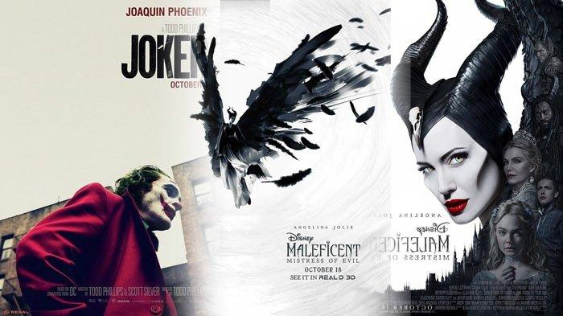
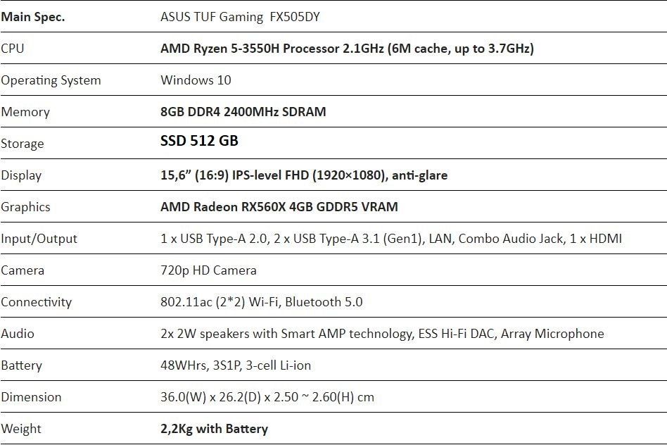

Ini adalah profile dari seorang anak yang sedang beranjak dewasa.
Saya lahir sebagai anak pertama, dari dua bersaudara. Pada tepatnya 19 Oktober 2003, yang dimana pada tanggal 19 nanti saya ulang tahun yang ke-16. MOHON DIRAYAKAN.
Karena saya ngebet sekolah, jadi saya masuk 1 tahun lebih awal. Dan selama sekolah saya beberapa kali berpindah-pindah walaupun hanya dari Bandung ke Banjaran, Tk tahun pertama di Bandung lalu pindah ke Banjaran sampai SD (Bhaktiwinaya1) kelas2 dan pindah kembali ke Bandung hingga kini (SD Sukasenang - SMP PGII1 - SMKN2). Alhamdullilah selama saya sekolah saya menjadi anak baik-baik (ya lebih tepatnya kalo nakal gk ketahuan) dan tidak pernah orangtua saya dipanggil kecuali jikalau ada pembagian rapot.
Saya memiliki beberapa hobby seperti: mendengarkan musik, menonton film, dan bermain game

